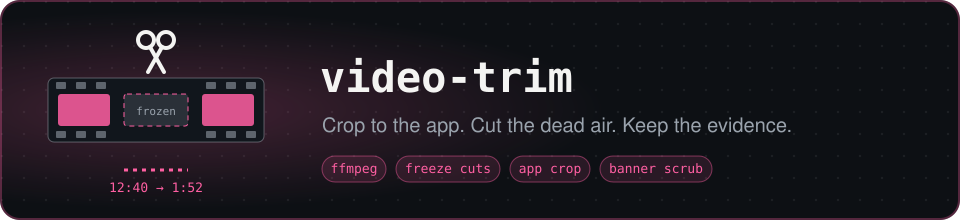

video-trim

Cut the dead time out of a screen recording, crop it to the app, and hand over a short video that still lines up with your logs.
A 365 s capture that was 293 s frozen came out at 84 s and 7 MB.
Crops away the desktop, chat and file names, so only the app is shared.
Cuts notification banners (payment, doorbell, message) before anyone sees them.
Quick start
Copy the folder into your harness: install a skill.
Check the tools are found:
ffmpeg -version && ffprobe -versionTrim a recording:
python3 <skill>/scripts/trim.py video/run.mp4 # -> video/run-trimmed.mp4 + .trimmap.txt
What's inside
| Script / file | What it does |
|---|---|
scripts/app_crop.py | Find the app's rectangle in a larger capture and crop to it |
scripts/trim.py | Cut frozen stretches, keep a beat at each edge |
scripts/cut_windows.py | Keep explicit or log-driven windows |
scripts/scrub_overlays.py | Cut notification banners (OCR; ocr_frames.swift is the macOS Vision helper) |
scripts/ocr_frames.swift | macOS Vision OCR helper behind scrub_overlays.py --ocr vision |
scripts/side_by_side.py | Slowed before/after of a sub-second effect |
scripts/frame_strip.py | Contact sheet to check a cut |
scripts/stitch.py | Join recordings into one review video with chapters |
config.example.env | Optional settings, commented |
How it works
Order: scrub, then crop and trim (one encode), then check a frame strip, then stitch if you need one file.
Every script writes a new file and refuses to overwrite without --force. The trimmed copy carries a source-time subtitle track and a segment map, so a moment in the short video matches a log line.
Crop to the app
On by default in
trim.pyandcut_windows.py. The verdict is printed and written to the trimmap or segments file.An app-only phone recording is detected and left alone.
Unclear cases (two windows, a lone small animation) exit
3and never guess. Pass--crop W:H:X:Yor--no-crop.Look at
<out>.crop-before.pngand<out>.crop-after.pngbefore sharing.Keep the full frame only when the surroundings are the evidence, and say so.
Configuration
| Key | Default | Meaning |
|---|---|---|
VIDEO_TRIM_CROP | auto | off keeps the full frame by default; --crop still works |
VIDEO_TRIM_CACHE | ~/.cache/video-trim | Folder for the compiled macOS OCR helper |
Set them in the environment or in ~/.config/video-trim/config.env. The environment wins.
Requirements
python33.9+, standard library only.ffmpegandffprobeon PATH.OCR for
scrub_overlays.pyonly: macOS Vision (needsswiftc) ortesseracton any OS.No network access.
Safety and uninstall
Inputs are never modified, except
scrub_overlays.py --in-place(the source is the leak).Nothing is written outside the outputs you name and the OCR cache folder.
No hooks to remove. Delete the skill folder and the cache folder.
Keep the original until the work is done.
Limits and traps
A held result screen is cut to about 0.6 s. Use
cut_windows.pywhen it is the evidence.A small idle animation or an animated background can defeat freeze detection.
Do not trim a timing capture.
Say in the hand-over that the video is trimmed and cropped.
Write
<name>.startwhen recording starts, or a cut video cannot be lined up with a log.Tesseract is less proven than Vision on real banners: dry-run first.
Files
SKILL.md: what the agent readsINSTALL.md: full install and uninstallconfig.example.env: settings template
Part of agnostic-skills · MIT